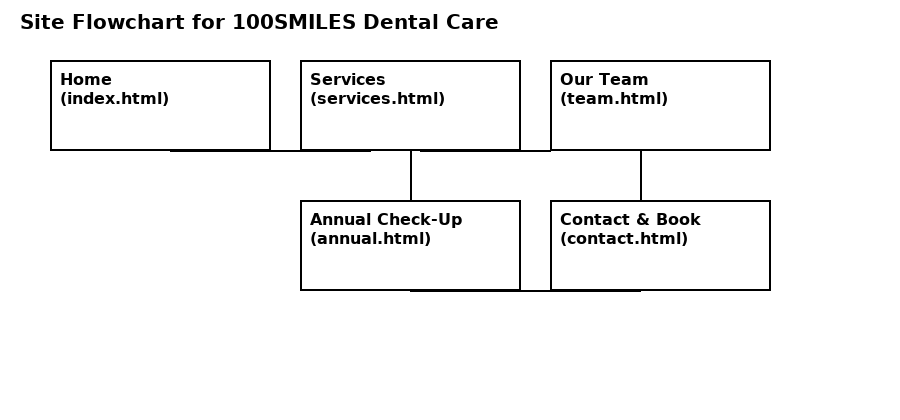

Name: Khondaker Ashef Hossain
The goal of the website is to increase appointment bookings and email enquiries for 100SMILES Dental Care by 20% within six months. The website will achieve this by providing clear service information, promoting the Annual Dental Check-Up package, and making contact options easily accessible, particularly for new patients. The mission is measurable through patient bookings, enquiries, and engagement.
The success of the website will be measured through:
1. Young Families (Parents aged 25–45): Parents seeking safe, friendly, and reliable dental care for their children. They value trust, clarity, and easy booking. The website will use simple language, friendly colours, family-oriented images, and clear calls-to-action like “Book First Visit”.
2. Adults & Retirees (45+): This group looks for experienced dentists, restorative services, and preventive care. The website will include professional imagery, detailed service explanations, staff qualifications, and prominent contact information for reassurance.
Below is the site map showing the structure of the website. The flowchart file is included as flowchart.png.
